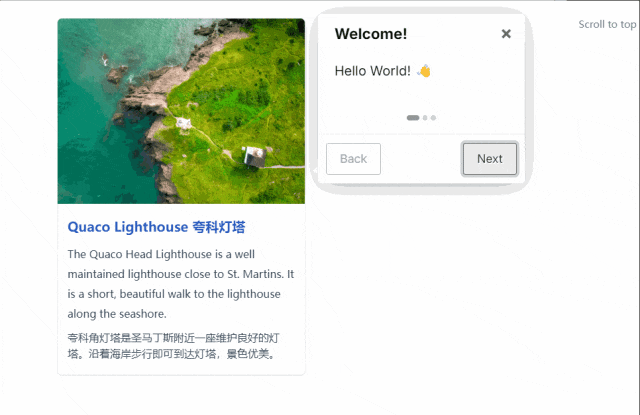
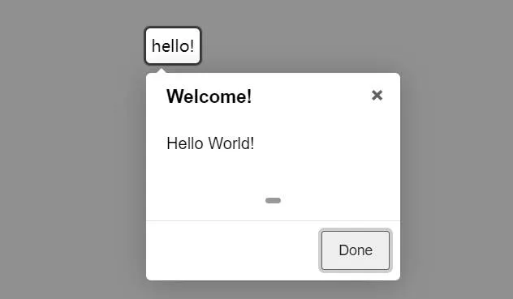

- 01 12 个 JS 动画库
- 02 es-toolkit
- 03 Fuse.js 轻量高效的模糊搜索库
- 04 Intro.js 神奇用户引导库
- 05 js 运算精度丢失，用这个库试试
- 06 Masonry.js 轻松实现瀑布流
- 07 NProgress.js 页面进度条
- 08 OpenCV 前端图片磨皮处理
- 09 Paper.js 一款神奇的 JavaScript 开源矢量图库
- 10 React Email 前端炫酷写邮件
- 11 Reveal.js 一款神奇的 JavaScript 开源演示框架
- 12 Slidev 新一代幻灯片制作工具
- 13 前端 js 动画库
- 14 前端图片压缩 js-image-compressor
- 15 前端实现人类动作捕捉
- 16 前端数据可视化常用工具大盘点
Intro.js 一款神奇的 JavaScript 开源新用户引导库？
1、Intro.js 是什么？
Intro.js 是一款用于创建新用户引导和产品介绍的 JavaScript 开源库。允许通过简单的代码快速添加交互式引导步骤，可以高亮页面上特定元素，添加描述性的文本，帮助用户了解如何使用网站的功能。
特点
- 易于使用：通过简单的 API 和配置选项，可以快速集成到任何项目中。
- 高度可定制：可以自定义样式、步骤、动画等，以适应不同的设计需求。
- 响应式设计：支持响应式布局，确保在不同设备上都能良好显示。
- 多语言支持：可以为不同的用户群体提供不同语言的引导。
2、核心 API
Intro.js 提供了两种主要的功能 Tour 和 Hints。
Tour
Tour 是一个引导用户通过应用程序或网站的功能点的向导。它通常用于新用户引导、功能演示或突出新功能。
Hints

Hints 是一种轻量级的提示，用于在用户界面上标记特定的元素，以提醒用户注意某些功能或操作。
Tour 更适合于全面的用户引导，通过一系列的步骤来展示应用程序的不同部分。Hints 更适合于提供快速的提示和反馈，通常用于标记特定的界面元素。根据需求选择使用。
3、快速开始
安装
Intro.js 没有任何依赖，可以通过 npm、yarn 和 CDN 直接安装。
npm install intro.js --save
# 或
yarn add intro.js
通过 CDN 引入 Intro.js 时需要注意， intro.js 文件链接需要放在 </body> 标记之前。 introjs.css 链接需要放在 <head> 中。
入门示例
Intro.js 提供了两种使用方式，第一种直接在 HTML 中添加属性，并调用 introJs().start() 即可。
<template>
<div data-title="Welcome!" data-intro="Hello World!">hello!</div>
</template>
<script setup>
import introJs from "intro.js"; // 引入intro.js
import "intro.js/introjs.css"; // intro.js的基础样式文件
import { nextTick, onMounted } from "vue";
onMounted(() => {
nextTick(() => {
introJs().start();
});
});
</script>
通过 HTML 属性方式配置灵活性比较低，另一种我们可以通过 Options 对象使用 JSON 自定义配置。
// 初始化-基础配置项
const introConfig = () => {
const intro = introJs();
intro.setOptions({
nextLabel: "下一步", // 下一个的按钮文字
prevLabel: "上一步", // 上一个按钮文字
skipLabel: "跳过", // 跳过指引的按钮文字
doneLabel: "完成", // 完成按钮的文字
hidePrev: false, // 是否在第一步中隐藏“上一步”按钮;不隐藏，将呈现为一个禁用的按钮
hideNext: false, // 是否在最后一步中隐藏“下一步”按钮（同时会隐藏完成按钮);不隐藏，将呈现为一个禁用的按钮
exitOnEsc: false, // 点击键盘的ESC按钮是否退出指引
exitOnOverlayClick: false, // 点击遮罩层时是否退出介绍
showStepNumbers: false, // 是否显示步骤编号
disableInteraction: true, // 是否禁用高亮显示框内元素的交互
showBullets: true, // 是否显示面板的指示点
overlayOpacity: 0.7, // 遮罩层的透明度 0-1之间
helperElementPadding: 10, // 选中的指引元素周围的填充距离
});
};
配置指引步骤，其中，steps 这是一个数组，定义了引导游的每个步骤。
// 配置引导步骤
const guide = () => {
const intro = introConfig();
intro.setOptions({
steps: [
{
// 指定要高亮显示的 DOM 元素的选择器或 DOM 元素本身。
element: document.querySelector("#guide"),
title: "Welcome",
// 显示在步骤中的介绍文本。
intro: "Hello World! 👋",
},
],
});
nextTick(() => {
intro.start();
});
};
上面两种方式实现的效果相同，效果如下：
